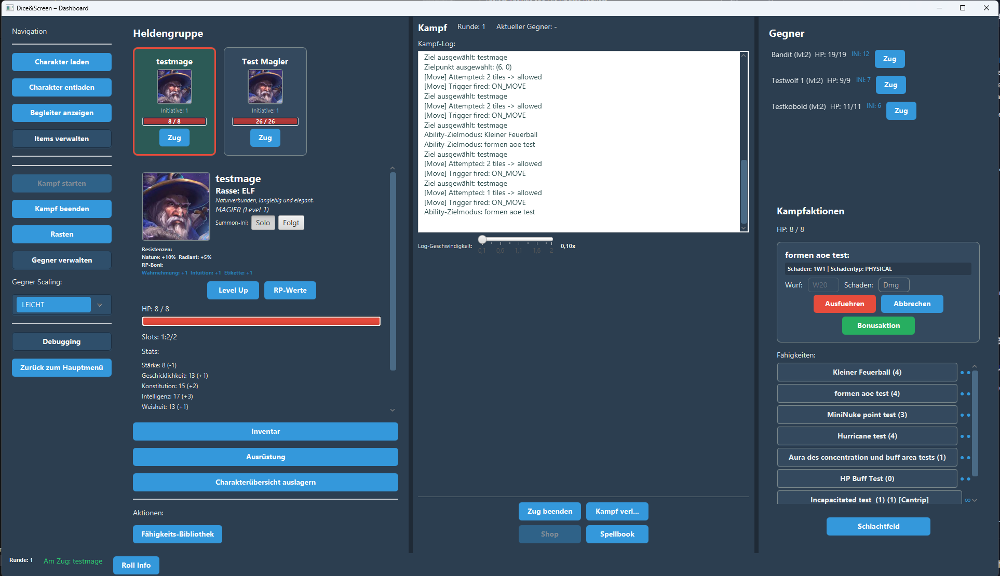
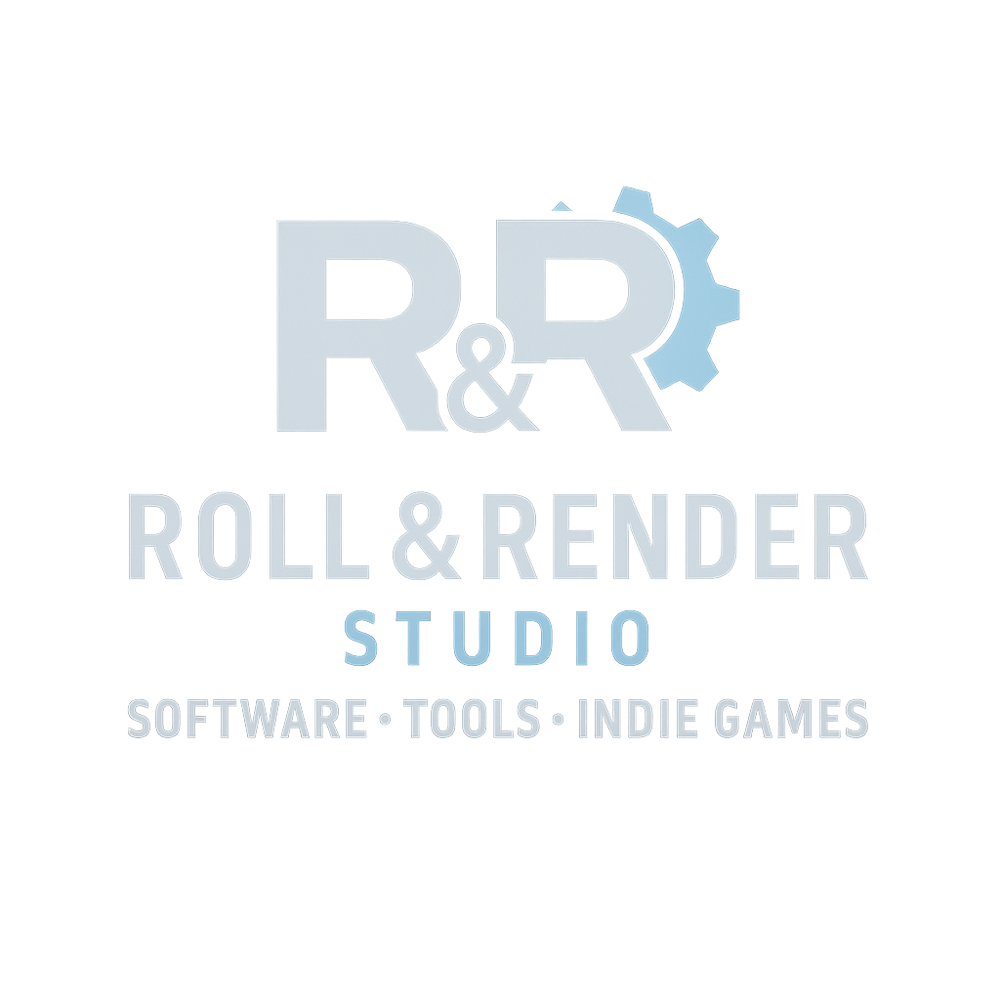
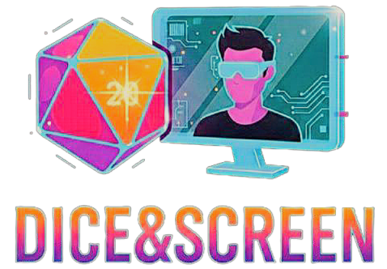
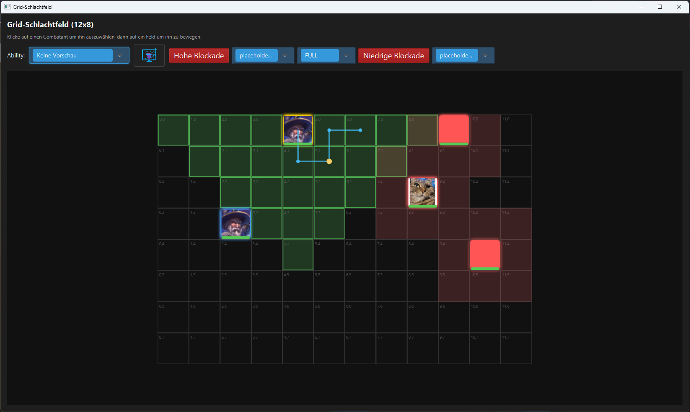
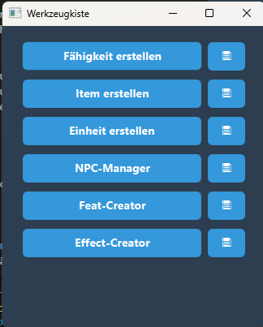
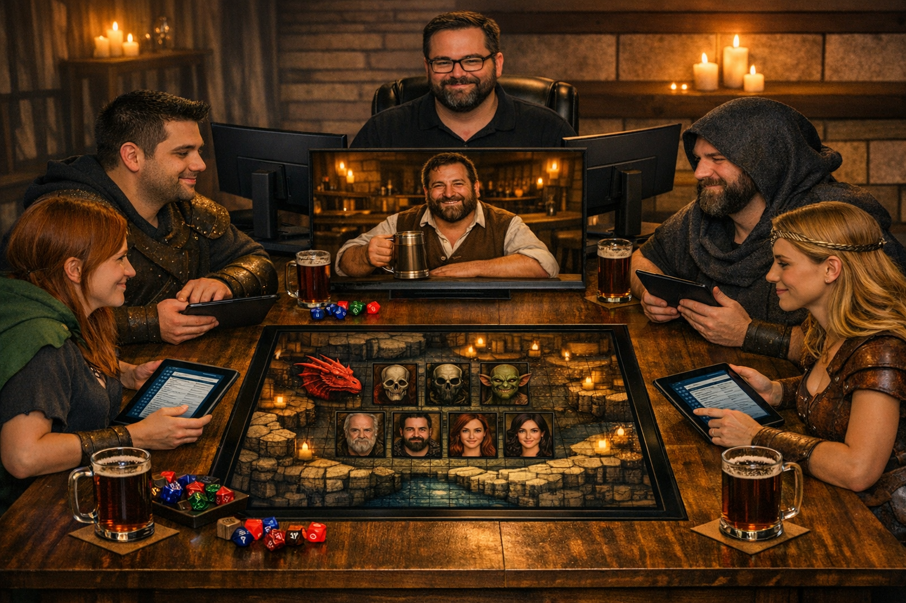

Theatre of Mind
Das Dashboard bündelt Initiative, Zustände und Kerninfos an einem Ort. So bleibt die Szene im Fluss, ohne dass der Tisch den Überblick verliert.


Kurz, klar, taktisch. Ein taktisches Briefing für Spielleitung und Spielende.

Das Dashboard bündelt Initiative, Zustände und Kerninfos an einem Ort. So bleibt die Szene im Fluss, ohne dass der Tisch den Überblick verliert.

Movement und Danger Zones machen Positionen sofort lesbar. Reichweiten, Wege und Risiken sind direkt sichtbar und schneller entschieden.

Die Creator-Auswahl zeigt den modularen Baukasten in der Praxis. Du aktivierst genau die Werkzeuge, die zu deinem Stil und deiner Kampagne passen.

Am Tisch zählt der Moment, nicht die Verwaltung.